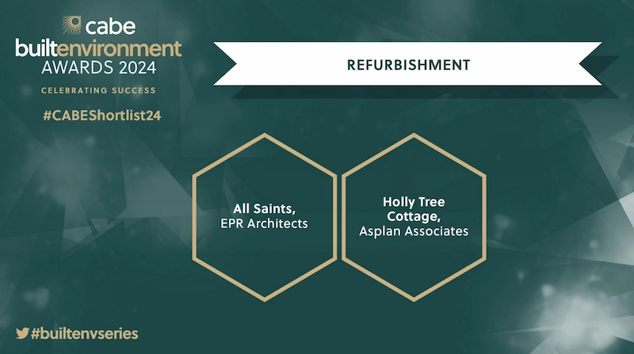
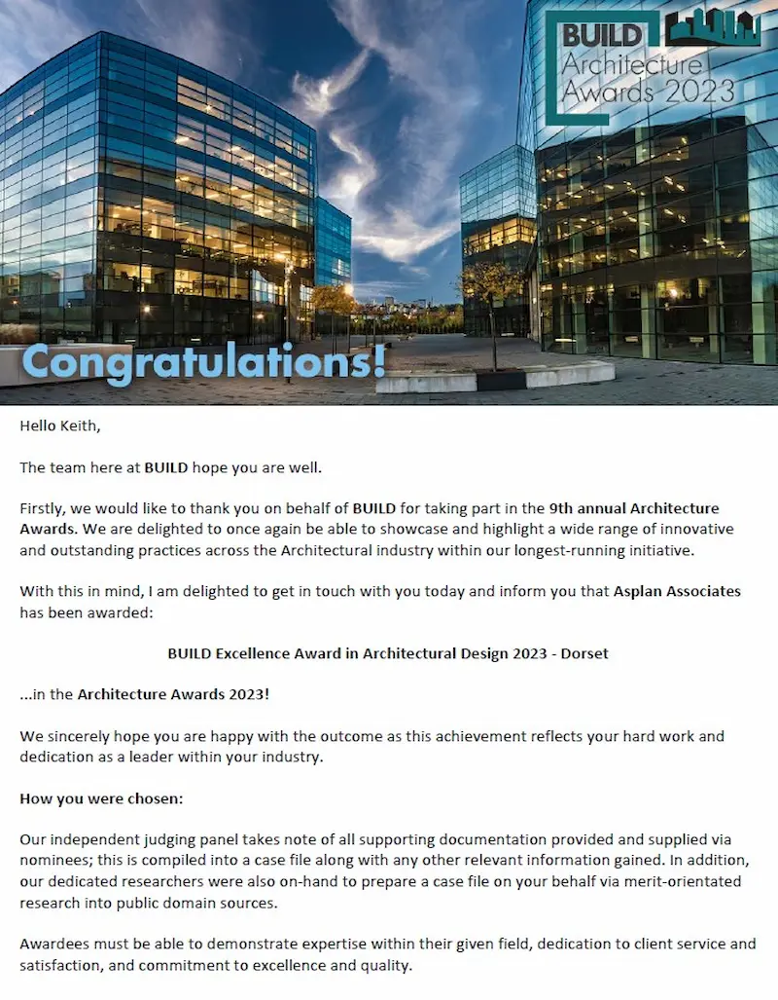
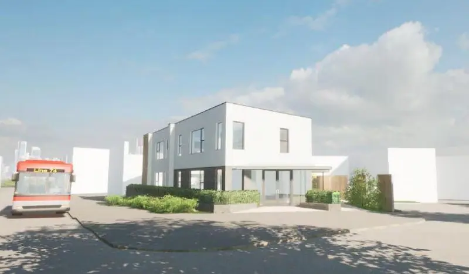
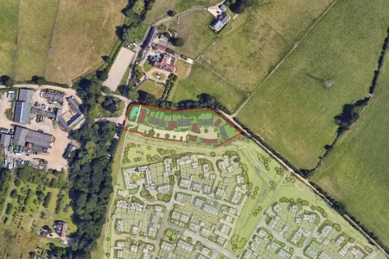
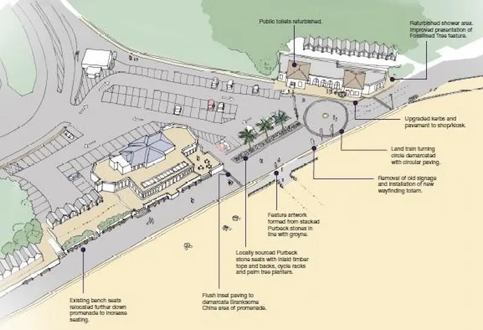
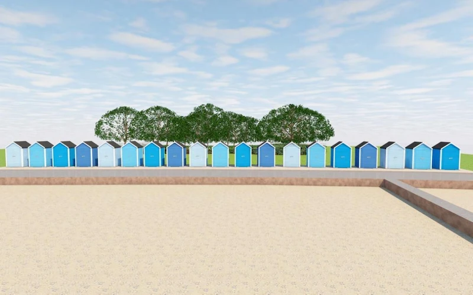
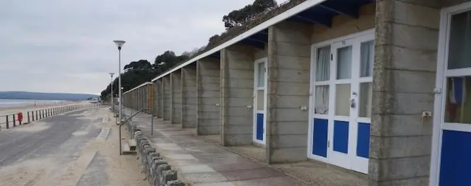
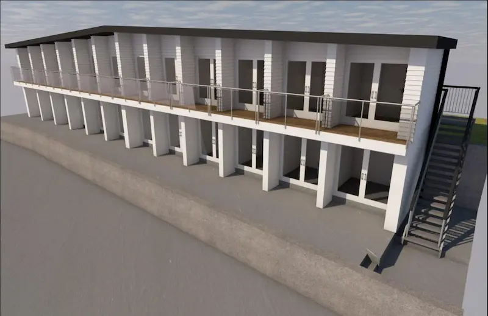

Nov 2023
CABE Awards 2024 Shortlisted
Asplan Shortlisted in the Cabe 2024 Awards
View Project DetailsRecognition of architectural excellence and planning success.

Asplan Shortlisted in the Cabe 2024 Awards
View Project Details
The team at Asplan Associates is thrilled to have received the BUILD Excellence Award in Architectural Design 2023 - Dorset. This achievement reflects our hard work and dedication as leaders within the industry. Thank you to the Architecture Awards 2023 for recognizing our commitment to delivering outstanding architectural design.
Read Reviews
A DEVELOPER who submitted two alternative proposals to transform a Southampton site used to display advertising hoardings has seen both schemes approved.
Learn More
TWO new projects proposing a host of new homes on pieces of land adjacent to separate “colossal” developments have been submitted.
Learn More
According to BCP Council work is set to start at Branksome Chine and at Shore Road within the next few days.
Learn More
The proposals for a first floor extension to an existing block at Shore Road promenade will be considered by planners.
Learn More
PLANS to build a second tier of beach huts on top of an existing block of huts at Canford Cliffs have been withdrawn.
Learn More
PLANS to build 12 new beach huts on top of another block of huts at Canford Cliffs have been submitted to planners.
Learn More